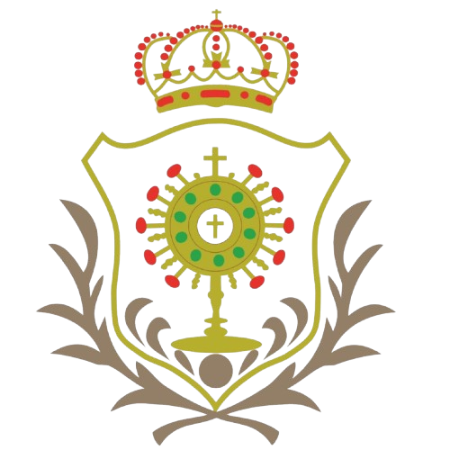

Inicio
Mapa del Sitio web
Jesús de la Santa Cena
Jesús de la Humildad
Jesús de la Piedad
Virgen de la Paz
Contacto
Selecciona idioma:
Español
Inglés
Francés
Alemán
Buscar en el sitio:
Mapa del Sitio Web

Anterior
Siguiente